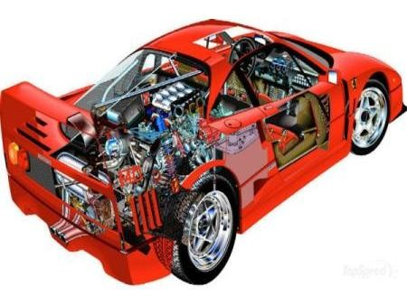
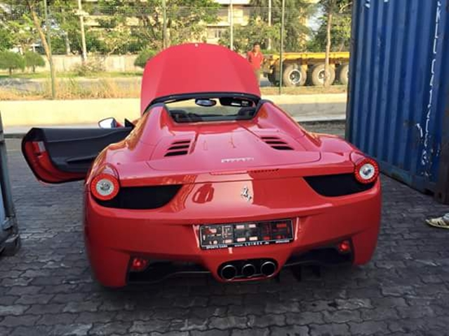

Ferrari 488 Spider là dòng xe mạnh nhất lịch sử hãng siêu xe Ý
So với động cơ V8 4.5L của 458, động cơ V8 3.9L của 488 Spider có tua vòng tối đa kém hơn 1.000 vòng/phút (8.000 so với 9.000 vòng/phút). Dù Ferrari 488 Spider cho trải nghiệm âm thanh thuộc hàng hay nhất trong số các siêu xe sử dụng động cơ tăng áp, người hâm mộ vẫn sẽ cảm thấy nhớ “phép màu ở tua vòng trên 8.000”. Chưa hết, ở chế độ Auto, chiếc Ferrari 488 Spider tự sang số ở khoảng tua máy tầm 7.700, 7.800 vòng/phút, điều càng khiến siêu xe này không thể “hát hay” như 458 Italia hay 458 Speciale.
Tuy nhiên, tiếng pô là thứ duy nhất Ferrari 488 Spider thua thiệt so với siêu xe tiền nhiệm. ECU của Ferrari 488 Spider được lập trình để tự giới hạn lực kéo động cơ và phân bổ lực kéo theo từng cấp số, do đó người lái không bị sốc bởi luồng sức mạnh thứ hai khi hệ thống tăng áp hoạt động “hết nấc”. Các kỹ sư Ferrari đã sử dụng van by-pass dòng khí thải điều khiển điện (thay vì hoạt động bằng sự chênh lệch áp suất giống như các xe bình thường khác)
Ngoài chức năng đóng mở tự động của mui xe trong 14 giây, Ferrari còn bổ sung thêm một nắp che động cơ được thiết kế lại với sườn dọc giúp tản nhiệt động cơ, cùng với giàn chống nằm ngang giúp chuyển không khí vào nắp che động cơ và kính phía sau để giảm không khí trong cabin.